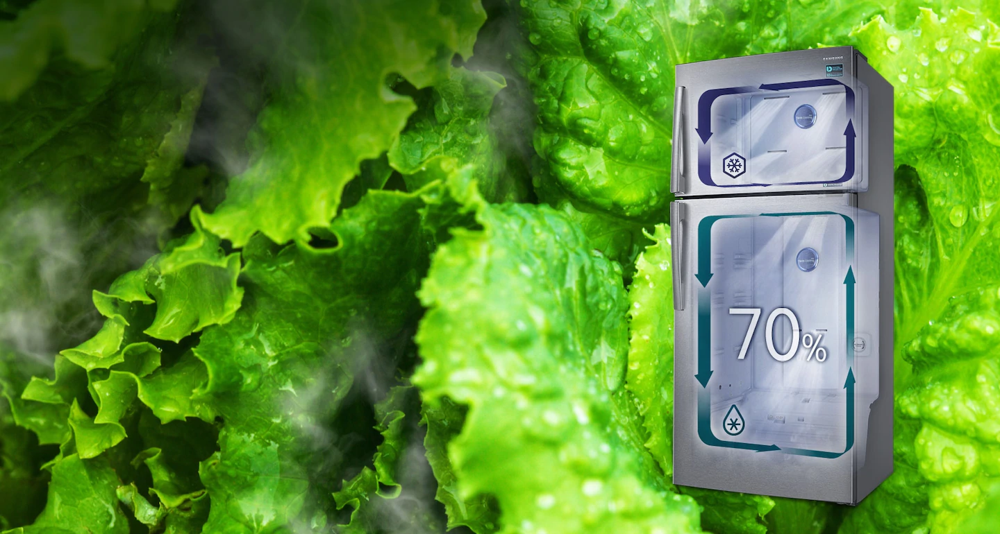
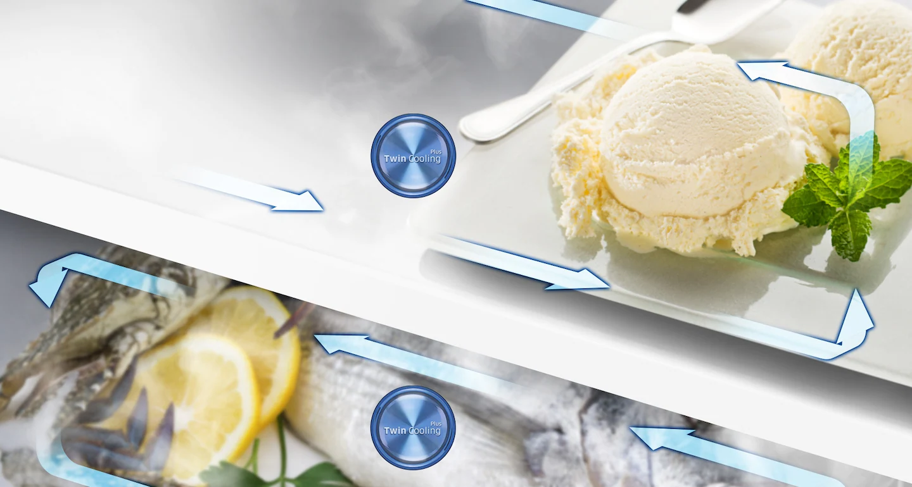
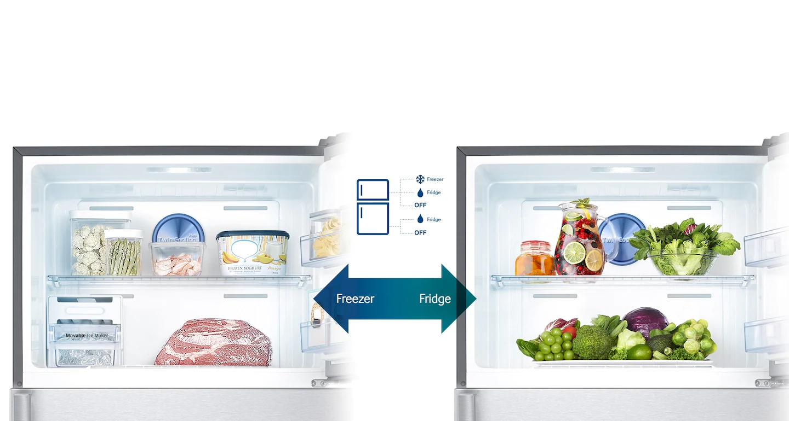
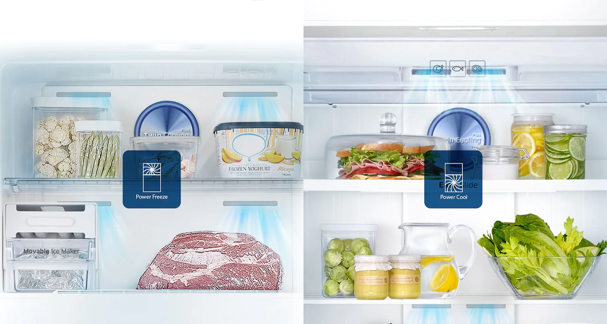
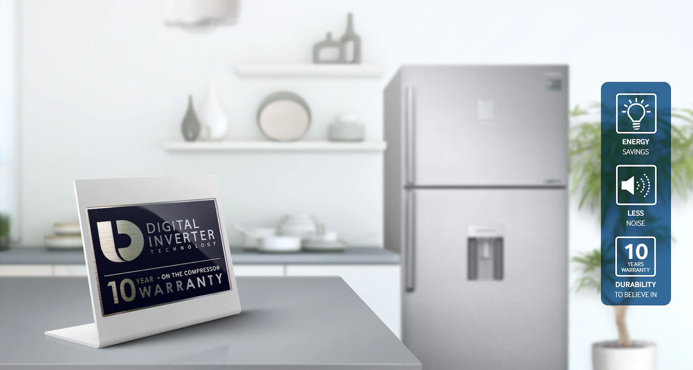
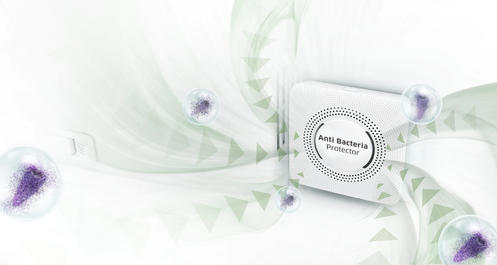

Sucul și prospețimea alimentelor din toate
compartimentele frigiderului
Numai sistemul Twin Cooling Plus ™ creează un mediu favorabil în frigider pentru depozitarea alimentelor proaspete la 70%
umiditate, spre deosebire de TMF-urile tradiționale, care asigură doar 30% umiditate. Astfel, această tehnologie vă permite să
păstrați prospețimea produselor pentru o perioadă mai lungă de timp, fără ca acestea să se usuce.

Mancare congelata delicioasa, fara mirosuri
Sistemul Twin Cooling Plus ™ răcește compartimentele frigiderului separat unul de celălalt, prevenind astfel răspândirea
mirosurilor nedorite din compartimentul frigiderului în compartimentul congelatorului. Acest lucru permite alimentelor
congelate să-și păstreze mai bine mirosul natural.

5 moduri de conversie disponibile ori de câte ori aveți
nevoie
Flexibilitate de neegalat în depozitarea alimentelor. Convertiți cu ușurință congelatorul în frigider, păstrând orice produs
alimentar care trebuie depozitat în diferite perioade ale anului sau pe care doriți să îl salvați pentru ocazii speciale este
proaspăt. Sau comutați la modul oprit * pentru a economisi energie, depinde de specificații.

Poate face băuturi cu gheață și răcire
Suflă rapid în aer rece, permițând alimentelor să înghețe sau să se răcească rapid. Cu o singură atingere a butonului dorit,
Power Cool începe să răcească rapid mâncarea și băuturile. Iar funcția Power Freeze este ideală pentru congelarea sau
solidificarea alimentelor congelate sau pentru prepararea gheții.

Puteți găsi și obține cu ușurință mâncare, chiar și în partea
din spate a frigiderului.
Scoaterea mâncării din frigider înseamnă întotdeauna rezolvarea unui număr de obstacole. Raftul Easy Slide vă permite să
păstrați alimentele eficient, facilitând accesul, fie în partea din spate a frigiderului, fie în colțurile acestuia.

Lucrează mai mult, mai silențios și folosește mai puțină
energie
Tehnologia invertorului digital reglează automat viteza compresorului la toate cele 7 niveluri de răcire. Datorită acestei
tehnologii, compresorul consumă mai puțină energie, are mai puțin zgomot în timpul funcționării și este supus unei uzuri mai
mici - toate acestea ajută la prelungirea duratei sale de viață.

Menține curățenia igienică și prospețimea aerului
Soluția de protecție antibacteriană păstrează compartimentul frigiderului curat și igienic. Aerul trece prin filtrul de cărbune
activ, care asigură sterilizarea sa continuă și eliminarea mirosurilor neplăcute, în timp ce rețeaua antibacteriană ucide
germenii.

Iluminare excelentă a spațiului interior
Becurile LED de înaltă performanță arată mult mai sofisticate decât iluminarea standard și oferă, de asemenea, economii
semnificative de energie. Situate în partea de sus a frigiderului și în pereții acestuia, ele creează o lumină plăcută și
strălucitoare în interiorul acestuia și iluminează perfect fiecare colț.